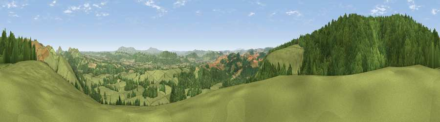

Viewpoint near Asterton
#6740 in England · top 21% of its area beats it · near AstertonWhere it is
The exact computed spot (SO 41425 89812). Click the marker for map links.
The view, rendered

A 360° render of this exact spot computed from the terrain model, tree cover and land cover — summer colours, afternoon light, calibrated against photographs of famous viewpoints. Real trees, hedges and buildings will differ in detail.
The panorama
Grey silhouette: terrain skyline in each direction (720 bearings, Earth curvature and refraction included). Dashed green: skyline with trees (+15 m) and buildings (+8 m) as obstacles. Blue strip: how far the ground is visible on each bearing.
Where the view opens
Wedge length = distance to the farthest visible ground on that bearing (vegetation-aware). Rings at 10, 25 and 50 km.
What fills the view
51% woodland · 45% grassland · 4% cropland
Angular shares of the visible panorama (visual magnitude), not map area. Landscape diversity 0.36 (0–1 Shannon).
Key numbers
More beautiful places nearby
The staircase of upgrades: each row has a higher view potential than everything closer. Driving times are estimates from straight-line distance, calibrated against real road routing — check an actual route before setting out.
| Place | Direction | Drive | Score |
|---|---|---|---|
| Viewpoint near Asterton | SW · 1 km | ~2 min | 69.0 |
| Viewpoint near Asterton | W · 2 km | ~4 min | 76.0 |
| Viewpoint near Asterton | WSW · 2 km | ~5 min | 79.6 |
| Viewpoint near Asterton | WSW · 2 km | ~6 min | 83.0 |
| The Lawley | NE · 11 km | ~21 min | 85.8 |
| Viewpoint near Little Wenlock | NE · 28 km | ~44 min | 86.6 |
| North Hill | SE · 56 km | ~78 min | 86.8 |
| Worcestershire Beacon | SE · 57 km | ~79 min | 87.1 |
52.50305, -2.86435 · source: screening · position refined by local search. Computed location — check access rights before visiting.